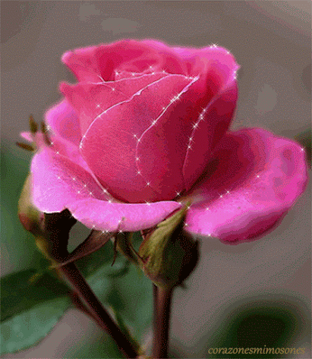
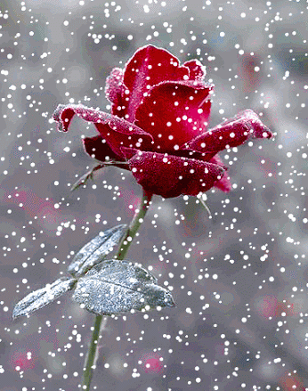
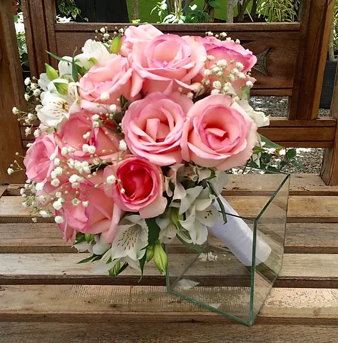
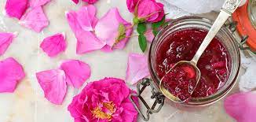
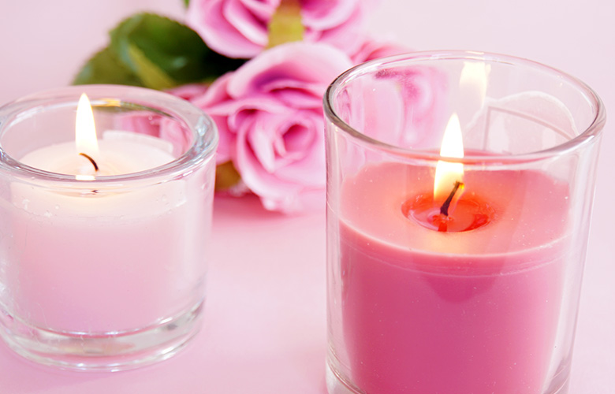

rosas
As rosas, conhecidas cientificamente como Rosa spp., são uma das flores mais icônicas e amadas em todo o mundo. Essas belas flores vêm em uma infinidade de cores, tamanhos e variedades, tornando-as uma das plantas mais populares em jardins, bouquets e decorações. As rosas têm sido símbolos de amor, paixão, romance e beleza há séculos, e sua presença traz um toque especial aos ambientes onde são cultivadas.
Características e Variedades:
Diversidade de Cores: As rosas são conhecidas por sua incrível variedade de cores, que incluem tons de vermelho, rosa, amarelo, branco, laranja e até mesmo azul (embora as rosas azuis sejam raras e geralmente sejam resultado de manipulação genética).
Formas e Tamanhos: Além da diversidade de cores, as rosas também vêm em várias formas e tamanhos. Desde as pequenas e delicadas rosas-miniatura até as grandiosas e exuberantes rosas-trepadeiras, há uma variedade para cada preferência.
Aroma Perfumado: Muitas variedades de rosas têm fragrâncias distintas, que variam de sutis e doces a ricas e intensas. O aroma característico das rosas torna-as ideais para arranjos florais e perfumaria.
Tipos de Rosas: Algumas das variedades de rosas mais populares incluem as Rosas Híbridas de Chá, Rosas Floribundas, Rosas Grandifloras, Rosas Antigas e Rosas Trepadeiras.
Habitat e Cultivo:
Clima: As rosas são cultivadas em uma ampla variedade de climas, desde regiões temperadas até tropicais, dependendo da variedade e da adaptação das plantas específicas.
Solo: Elas preferem solos bem drenados, ricos em matéria orgânica e com pH ligeiramente ácido. Um solo fértil garantirá um crescimento saudável e uma floração exuberante.
Luz: A maioria das rosas requer plena exposição ao sol para prosperar e florescer abundantemente. Pelo menos 6 horas diárias de luz solar são recomendadas para a maioria das variedades.
Cuidados: O cultivo de rosas requer cuidados regulares, incluindo rega adequada, adubação, poda e controle de pragas e doenças. Com os devidos cuidados, as rosas podem ser plantas de longa duração e florescerem por muitos anos.
Usos e Aplicações:
Decoração: As rosas são usadas amplamente em arranjos florais, buquês e decoração de eventos como casamentos, aniversários e festas. Sua beleza e variedade de cores tornam-nas escolhas populares para adornar ambientes e criar atmosferas românticas e acolhedoras.
Presente: Ao longo dos séculos, as rosas têm sido escolhidas como presentes especiais para expressar amor, carinho e gratidão. Oferecer uma rosa é uma forma tradicional e significativa de demonstrar afeto e apreço pelas pessoas queridas.
Produtos para Cuidados com a Pele: O óleo de rosa e extratos de pétalas são utilizados na fabricação de diversos produtos de cuidados com a pele. Eles são apreciados por suas propriedades hidratantes, calmantes e rejuvenescedoras, sendo encontrados em cremes hidratantes, óleos corporais, sabonetes e perfumes.
Culinária: Algumas variedades de rosas são comestíveis e podem ser usadas na culinária para dar um toque sofisticado a pratos e bebidas. Pétalas de rosas são usadas para fazer geleias, xaropes, xícaras de chá e outras iguarias requintadas.
Medicina Alternativa: Na medicina alternativa, algumas espécies de rosas são valorizadas por suas propriedades medicinais. Infusões e extratos de algumas variedades são usados para aliviar sintomas de estresse, ansiedade e problemas digestivos.
Perfumaria: O aroma das rosas é altamente apreciado na indústria de perfumaria. O óleo essencial de rosa é um ingrediente valioso em muitas fragrâncias, proporcionando uma nota floral e romântica aos perfumes.
Indústria de Cosméticos: Além dos produtos para cuidados com a pele, os extratos de rosas são usados em shampoos, condicionadores e outros produtos capilares. Eles ajudam a hidratar e fortalecer os cabelos.
Artesanato: As pétalas de rosas secas são frequentemente utilizadas em artesanato, como em cartões decorativos, velas perfumadas e sabonetes artesanais.
Religião e Simbolismo: As rosas têm significados especiais em várias tradições religiosas e culturas. Elas são frequentemente associadas a símbolos espirituais, representando amor divino, pureza e beleza.
Produção de Óleos Essenciais: Algumas variedades de rosas, como a Rosa damascena e a Rosa centifolia, são cultivadas especificamente para a produção de óleos essenciais. Estes óleos são usados em aromaterapia e têm diversas aplicações terapêuticas.
Construção de Paisagens: Além de suas qualidades decorativas, algumas variedades de rosas são utilizadas em projetos de paisagismo para formar cercas vivas, bordas de jardins e criar áreas de destaque em espaços ao ar livre.
Conclusão: As rosas são verdadeiramente flores versáteis, com aplicações que vão desde a ornamentação de ambientes até a produção de produtos cosméticos e medicinais. Seu charme, aroma e significados simbólicos têm encantado pessoas ao longo da história. As rosas continuam a ser uma fonte de inspiração para artistas, amantes da jardinagem, perfumistas e entusiastas de beleza natural. Sua presença nos lembra da beleza e delicadeza presentes na natureza, despertando emoções e encantando nossos sentidos.